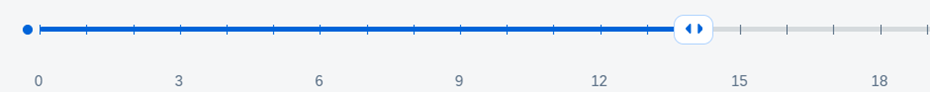
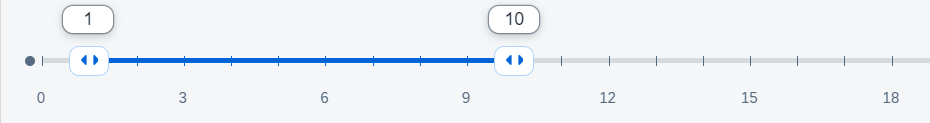

A slider is a control that enables you to adjust values on a specified range. OpenUI5 has two controls
of this type - sap.m.Slider and sap.m.RangeSlider.
The slider allows you to choose a single value, whereas with the RangeSlider you can
choose an interval with start and end within a given interval.


Technically, the RangeSlider extends sap.m.Slider and thus uses all its
properties. It has two additional properties for the second slider value and the
selected range.
Both versions of the control support features for tickmarks, labels and advanced
tooltips. If you only need a simple native browser tooltip, you can enable
handleTooltip and show it on mouse hover. For more advanced
cases, you can customize the labels and the tooltips for the slider handles.
In the background, the sliders operate on floats, but some usecases may require that
the range consists of other values, for example dates. In order to properly match
your values to floats, you need to add custom scale and implement the
Iscale interface.
// "Element" required from "sap/ui/core/Element"
var CustomScale = Element.extend("sap.xx.custom.CustomScale", {
interfaces: [
"sap.m.IScale"
],
library: "sap.xx.custom",
});You need to implement the following methods of the IScale interface.
getTickmarksBetweenLabels - Determine which tickmarks
should have a label
calcNumberOfTickmarks - Determine the number of
tickmarks on the scale
handleResize - Resize handler
getLabel - Getter for the label
This way you have full control over the labels, their placement, density, and text. As your custom labels may be longer, you will also need to show less tickmarks in order to prevent cluttering of the scale values.
This custom scale is then passed to the control.
// "Slider" required from "sap/m/Slider"
// "CustomScale" required from "sap/xx/custom/CustomScale"
// "CustomTooltip" required from "sap/xx/custom/CustomTooltip"
var oSlider = new Slider({
min: 0,
max: 30,
value: 15,
width: "80%",
enableTickmarks: true,
showAdvancedTooltip: true,
scale: new CustomScale(),
customTooltips: [new CustomTooltip()]
})In order to create a custom tooltip, you should extend the class
sap.m.SliderTooltipBase and override some methods. If you want
to define your own content for the tooltip, you should override just the
renderTooltipContent method. If you want to be notified when
the Slider's value has been changed, you need to implement the
sliderValueChanged which takes as an argument the new value of
the Slider, so you can adjust the value of the tooltip.
During rendering you can provide the content of the tooltips by writing directly to the DOM.
renderTooltipContent: function (oRm, oControl) {
// you can write any DOM here - render controls or anything you want
// (inline elements are not recommended as you need to style them on your own)
oRm.openStart("div", oControl.getId() + "-inner");
oRm.class("sapCustomSliderTooltip");
oRm.openEnd();
oRm.close("div")Depending on the type of slider, you may need different values to be read out by the screen
reader. In the case of a simple numeric slider, the screen reader will read the
current float value. If you have a slider with a custom scale with tickmarks, the
screen reader will read the value returned by getLabel() of the
scale. If you have custom tooltips, then the return value from the tooltip formatter
will be read. The priority for these is the following: Custom tooltips overrule
custom scale and custom scale overrules the generic slider.